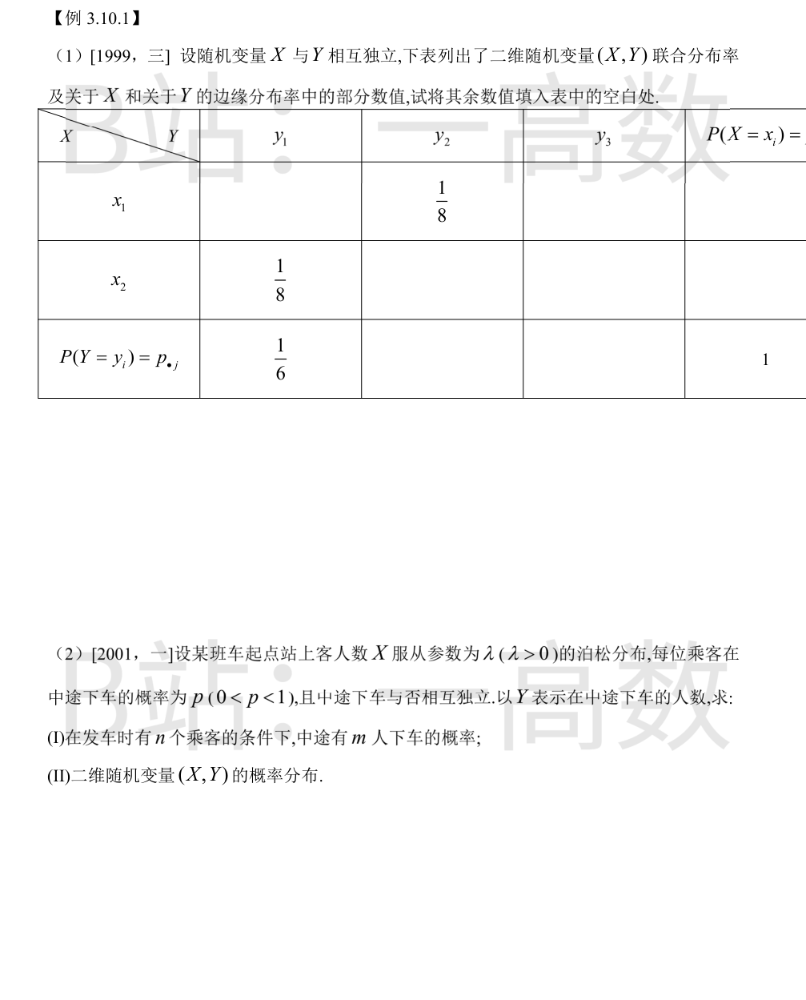
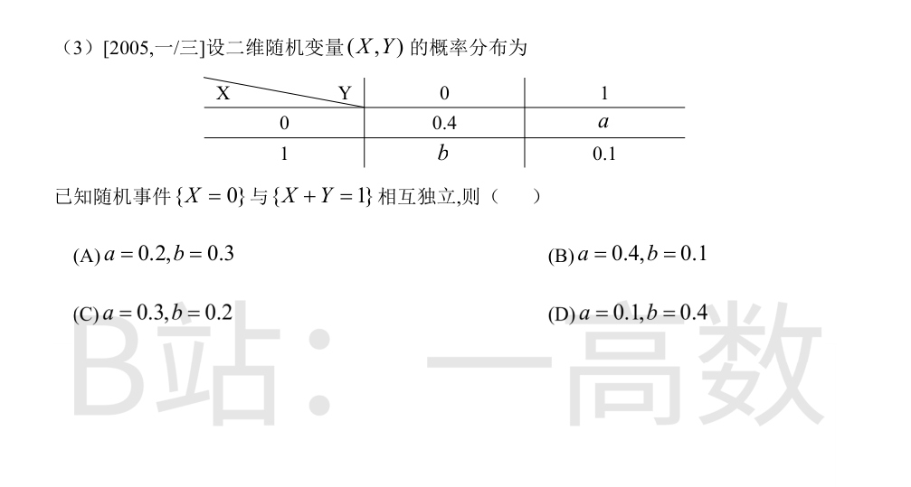
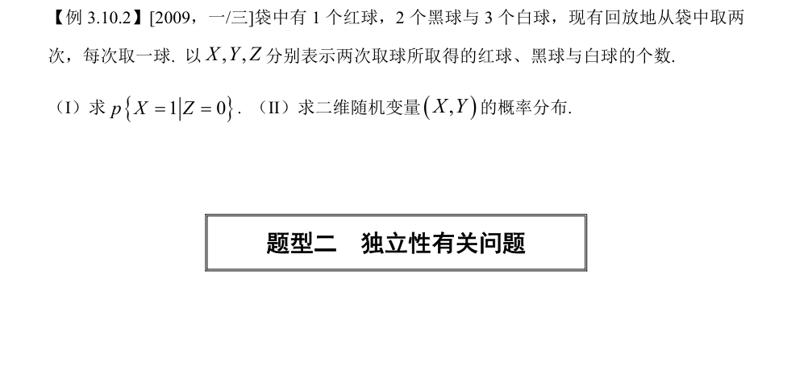
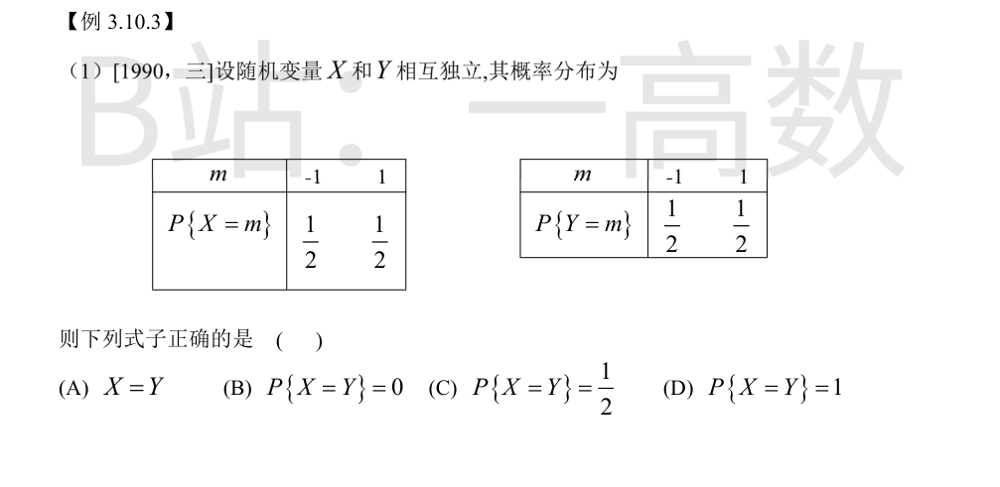
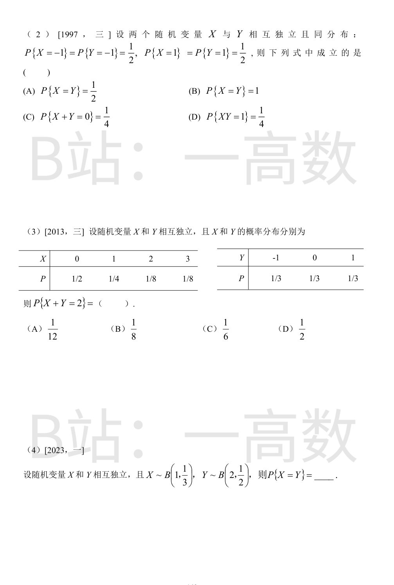
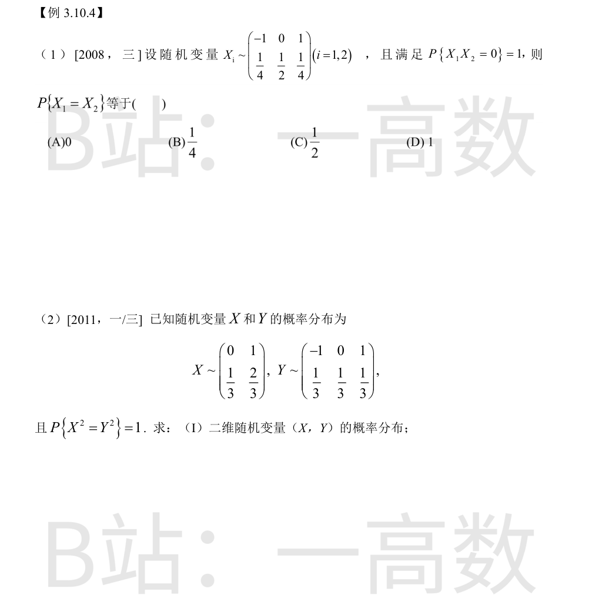

独立性给出 p_{ij}=p_{i\cdot}\cdot p_{\cdot j}，用它逐格补全。
第一步：由第二行第一列交叉项求边缘。
$$P\{X=x_2,Y=y_1\}=P\{X=x_2\}P\{Y=y_1\}\Rightarrow \frac18=P\{X=x_2\}\cdot\frac16 \Rightarrow P\{X=x_2\}=\frac34,\quad P\{X=x_1\}=\frac14.$$
第二步：由第一行第二列求 P(Y=y2)。
$$P\{X=x_1,Y=y_2\}=P\{X=x_1\}P\{Y=y_2\}\Rightarrow \frac18=\frac14\cdot P\{Y=y_2\}\Rightarrow P\{Y=y_2\}=\frac12.$$
第三步：由边缘归一性
$$P\{Y=y_3\}=1-\frac16-\frac12=\frac13.$$
第四步：独立性逐一补齐其余联合项：
$$P(x_1,y_1)=\frac14\cdot\frac16=\frac{1}{24},\quad P(x_1,y_3)=\frac14\cdot\frac13=\frac{1}{12},$$
$$P(x_2,y_2)=\frac34\cdot\frac12=\frac38,\quad P(x_2,y_3)=\frac34\cdot\frac13=\frac14.$$
校验行和：x1 行 1/24+1/8+1/12=6/24=1/4 ✓；x2 行 1/8+3/8+1/4=6/8=3/4 ✓；列和 y2: 1/8+3/8=1/2 ✓，y3: 1/12+1/4=1/3 ✓。
(I) 发车时恰有 n 名乘客（即 X=n）条件下，每位乘客独立地以概率 p 下车、以 1-p 不下车，Y 在 X=n 条件下服从二项分布 B(n,p)：
$$P\{Y=m\mid X=n\}=\binom{n}{m}p^{m}(1-p)^{n-m},\qquad m=0,1,\dots,n.$$
(II) 由乘法公式 P{X=n,Y=m}=P{X=n}P{Y=m|X=n}，其中 P{X=n}=λ^n e^{-λ}/n!：
$$P\{X=n,Y=m\}=\frac{\lambda^{n}}{n!}e^{-\lambda}\binom{n}{m}p^{m}(1-p)^{n-m},$$
取值范围：n=0,1,2,…；m=0,1,…,n；其余 (n,m) 处概率为 0。
校验：对 m 从 0 到 n 求和得 P{X=n}，再对 n 求和用 e^{λ} 的展开知总和为 1 ✓。（附带可知边缘 Y~Poisson(λp)。）
由归一性：0.4+a+b+0.1=1，得
$$a+b=0.5.$$
各事件概率：
$$P\{X=0\}=0.4+a,\qquad P\{X+Y=1\}=P\{X=0,Y=1\}+P\{X=1,Y=0\}=a+b,$$
$$P\{X=0\}\cap\{X+Y=1\}=P\{X=0,Y=1\}=a.$$
由独立性 a=(0.4+a)(a+b)=(0.4+a)\times 0.5：
$$a=0.2+0.5a\Rightarrow 0.5a=0.2\Rightarrow a=0.4,\quad b=0.1.$$
对照选项：(A) a=0.2,b=0.3；(B) a=0.4,b=0.1；(C) a=0.3,b=0.2；(D) a=0.1,b=0.4。故选 (B)。

每次取球：P(红)=1/6，P(黑)=2/6=1/3，P(白)=3/6=1/2；有放回故两次独立。
Z=0 表示两次均未取到白球，即两次都在红、黑中取：
$$P\{Z=0\}=\left(\frac16+\frac13\right)^{2}=\left(\frac12\right)^{2}=\frac14.$$
X=1 且 Z=0 表示一次取红、一次取黑：
$$P\{X=1,Z=0\}=2\cdot\frac16\cdot\frac13=\frac19.$$
由条件概率定义：
$$p=P\{X=1\mid Z=0\}=\frac{1/9}{1/4}=\frac49.$$
校验（另一算法）：在 Z=0 条件下每次取球只可能是红(概率 1/6 ÷ 1/2 = 1/3)或黑(2/3)，两次独立，恰一次红的概率为 2·(1/3)(2/3)=4/9 ✓。
每次取球结果分为红(1/6)、黑(1/3)、白(1/2)三类，两次独立，故 (X,Y,Z) 服从三项分布，且 X+Y+Z=2（Z 由 X,Y 决定）。用多项式公式：
$$P\{X=i,Y=j\}=\frac{2!}{i!\,j!\,(2-i-j)!}\left(\frac16\right)^{i}\left(\frac13\right)^{j}\left(\frac12\right)^{2-i-j},\quad i+j\le 2.$$
逐点计算：
$$P(0,0)=\left(\frac12\right)^2=\frac14,$$
$$P(0,1)=2\cdot\frac13\cdot\frac12=\frac13,\qquad P(0,2)=\left(\frac13\right)^2=\frac19,$$
$$P(1,0)=2\cdot\frac16\cdot\frac12=\frac16,\qquad P(1,1)=2\cdot\frac16\cdot\frac13=\frac19,$$
$$P(2,0)=\left(\frac16\right)^2=\frac{1}{36}.$$
i+j>2 的各点概率为 0。校验总和：
$$\frac14+\frac13+\frac19+\frac16+\frac19+\frac{1}{36}=\frac{9+12+4+6+4+1}{36}=\frac{36}{36}=1.\ \checkmark$$


由独立性：
$$P\{X=Y\}=P\{X=-1,Y=-1\}+P\{X=1,Y=1\}=\frac12\cdot\frac12+\frac12\cdot\frac12=\frac14+\frac14=\frac12.$$
(A) 错：X 与 Y 是两个独立的随机变量，即使分布相同也不会恒等（P{X=Y}=1/2≠1）；(B) 错：P{X=Y}=1/2≠0；(D) 错：1/2≠1。
故选 (C)。
逐项验证：
(A)(B)：
$$P\{X=Y\}=P(-1,-1)+P(1,1)=\frac14+\frac14=\frac12,$$
故 (A) 成立、(B) 不成立。
(C)：
$$P\{X+Y=0\}=P(-1,1)+P(1,-1)=\frac14+\frac14=\frac12\neq\frac14,$$不成立。
(D)：
$$P\{XY=1\}=P(-1,-1)+P(1,1)=\frac12\neq\frac14,$$不成立。
故选 (A)。
由卷积公式：
$$P\{X+Y=2\}=\sum_{k}P\{X=k\}P\{Y=2-k\}.$$
使两项均非零的 k 只能取 1,2,3（k=0 需 Y=2，不可能）：
$$P\{X+Y=2\}=P\{X=1\}P\{Y=1\}+P\{X=2\}P\{Y=0\}+P\{X=3\}P\{Y=-1\}$$
$$=\frac14\cdot\frac13+\frac18\cdot\frac13+\frac18\cdot\frac13=\frac{1}{12}+\frac{1}{24}+\frac{1}{24}=\frac{2+1+1}{24}=\frac16.$$
故选 (C)。
X~B(1,1/3)：P{X=0}=2/3，P{X=1}=1/3。
Y~B(2,1/2)：P{Y=0}=C(2,0)(1/2)^2=1/4，P{Y=1}=C(2,1)(1/2)^2=1/2，P{Y=2}=1/4。
X 与 Y 独立，公共取值为 0,1：
$$P\{X=Y\}=P\{X=0\}P\{Y=0\}+P\{X=1\}P\{Y=1\}=\frac23\cdot\frac14+\frac13\cdot\frac12=\frac16+\frac16=\frac13.$$
故填 1/3。

P{X1X2=0}=1 意味着「两变量同时非零」的概率为 0：
$$P\{X_1=-1,X_2=-1\}=P\{X_1=1,X_2=1\}=0,$$
且 P{X1=0 或 X2=0}=1。
于是
$$P\{X_1=X_2\}=P(-1,-1)+P(0,0)+P(1,1)=P\{X_1=0,X_2=0\}.$$
用加法公式求 P(0,0)：
$$P\{X_1=0,X_2=0\}=P\{X_1=0\}+P\{X_2=0\}-P\{X_1=0\ \text{或}\ X_2=0\}=\frac12+\frac12-1=0.$$
故 P{X1=X2}=0，选 (A)。
X² 取值 0(X=0)、1(X=1)；Y² 取值 0(Y=0)、1(Y=±1)。P{X²=Y²}=1 说明 (X,Y) 只可能在 X²=Y² 的点上有正概率，即
$$(X,Y)\in\{(0,0),\,(1,-1),\,(1,1)\}.$$
X=0 时必有 Y=0（否则 X²=0≠1=Y²），故
$$P\{X=0,Y=0\}=P\{X=0\}=\frac13.$$
Y=-1 时必有 X=1：
$$P\{X=1,Y=-1\}=P\{Y=-1\}=\frac13.$$
Y=1 时必有 X=1：
$$P\{X=1,Y=1\}=P\{Y=1\}=\frac13.$$
其余各项为 0：P(0,-1)=P(0,1)=P(1,0)=0。
校验边际：P(X=1)=P(1,-1)+P(1,1)=2/3 ✓；P(Y=0)=P(0,0)=1/3 ✓；总和 1 ✓。